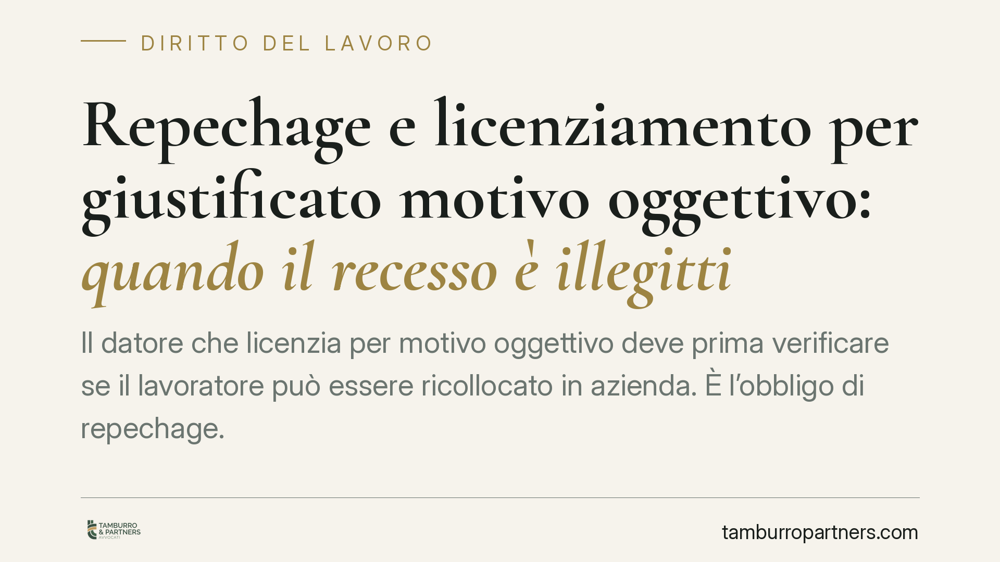

Repechage e licenziamento per giustificato motivo oggettivo: quando il recesso è illegittimo
Il datore che licenzia per motivo oggettivo deve prima verificare se il lavoratore può essere ricollocato in azienda. È l'obbligo di repechage. La giurisprudenza di legittimità lo qualifica come vera condizione di legittimità del recesso: la sua omissione rende il licenziamento illegittimo, con conseguenze che variano in base alla data di assunzione. Vediamo cosa cambia in concreto.

Il caso e l'orientamento della Cassazione
Il tema torna al centro dell'attenzione: quando un'azienda licenzia un dipendente per giustificato motivo oggettivo (ad esempio soppressione della posizione o riorganizzazione), non basta dimostrare l'effettività della ragione economica. Occorre anche provare di aver verificato l'impossibilità di ricollocare il lavoratore in altre posizioni disponibili. È il cosiddetto obbligo di repechage (letteralmente "ripescaggio").
La Sezione Lavoro della Corte di Cassazione ha consolidato nel tempo un orientamento chiaro: il repechage non è un adempimento formale, ma una condizione di legittimità del recesso. Il suo mancato rispetto comporta l'illegittimità del licenziamento, a prescindere dalla fondatezza della ragione organizzativa addotta. L'onere della prova grava sul datore di lavoro, che deve dimostrare l'assenza di posizioni alternative compatibili con la professionalità del dipendente.
L'inquadramento normativo
Il fondamento dell'obbligo si ricava dall'art. 3 della L. 604/1966, che definisce il giustificato motivo oggettivo, letto insieme all'art. 41 della Costituzione e ai principi di correttezza e buona fede nell'esecuzione del contratto.
La ricollocazione va verificata anzitutto su mansioni equivalenti, cioè riconducibili allo stesso livello e categoria legale di inquadramento del lavoratore (art. 2103 c.c.). La riforma del 2015 (art. 3 D.Lgs. 81/2015, che ha modificato l'art. 2103 c.c.) ha ampliato il perimetro: è oggi ammessa, entro i limiti previsti dai commi 2 e seguenti dell'art. 2103, anche l'assegnazione a mansioni inferiori, tipicamente in caso di modifica degli assetti organizzativi. Ciò rileva anche per il repechage: la disponibilità di posizioni inferiori compatibili può quindi entrare nel perimetro della verifica.
Una precisazione sulla somministrazione di lavoro. La disciplina, un tempo contenuta nel D.Lgs. 276/2003, è oggi regolata dagli artt. 30 e seguenti del D.Lgs. 81/2015, che hanno superato le relative norme del decreto del 2003. Nei rapporti in somministrazione l'obbligo di repechage e i suoi limiti vanno letti tenendo conto della struttura triangolare tra lavoratore, agenzia somministratrice e impresa utilizzatrice.
Le implicazioni pratiche
Le conseguenze dell'illegittimità dipendono dalla data di assunzione del lavoratore.
Per i rapporti sorti prima del 7 marzo 2015 si applica l'art. 18 dello Statuto dei lavoratori (L. 300/1970), che prevede un ventaglio di tutele: dalla reintegrazione con indennità risarcitoria fino all'indennizzo puramente economico, a seconda della gravità del vizio accertato dal giudice.
Per i rapporti sorti dal 7 marzo 2015 si applica il regime delle tutele crescenti (D.Lgs. 23/2015), che privilegia la tutela indennitaria parametrata all'anzianità di servizio, limitando la reintegrazione a ipotesi circoscritte. La distinzione è decisiva: a parità di vizio, lo stesso lavoratore può ottenere esiti molto diversi in base a quando è stato assunto.
Per il datore, la lezione operativa è netta: la sola esistenza di una ragione economica non mette al riparo dal contenzioso. Serve documentare il percorso di verifica delle alternative occupazionali.
Cosa fare in concreto
- Verifica i termini di impugnazione. Il licenziamento va impugnato entro 60 giorni dalla comunicazione con atto stragiudiziale (art. 6 L. 604/1966); entro i successivi 180 giorni occorre depositare il ricorso giudiziale o attivare il tentativo di conciliazione o arbitrato, pena la decadenza.
- Ricostruisci la data di assunzione. È il dato che determina il regime applicabile (art. 18 o tutele crescenti) e, quindi, il tipo di tutela ottenibile.
- Raccogli elementi sulle posizioni disponibili. Organigramma, nuove assunzioni successive al recesso, posti scoperti: sono indizi utili a contestare l'assolvimento dell'obbligo di repechage.
- Datori: documentate la verifica. Tracciate per iscritto le posizioni esaminate e le ragioni di incompatibilità, comprese le eventuali mansioni inferiori disponibili.
- Nei rapporti in somministrazione, individuate il soggetto obbligato. La struttura triangolare incide sulla ripartizione degli obblighi tra agenzia e utilizzatore: è opportuna una valutazione tecnica preventiva del singolo assetto contrattuale.
---
Contributo informativo a cura di Tamburro & Partners Avvocati. Non costituisce parere legale.
Ogni storia di lavoro ha i suoi tempi.
Se gestisci HR e vuoi un confronto su contenzioso, ispezioni o licenziamenti, scrivi allo studio. Ti rispondiamo entro un giorno lavorativo.